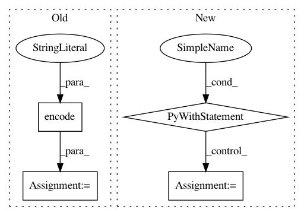

78ba1c8cfcd2c31f1e1b007d2e20e771049e869b,tensorboardX/graph.py,,graph,#Any#Any#,35
Before Change
make_list_of_nodes(lastVar.grad_fn)
for node in list_of_nodes:
// shape = TensorShapeProto(dim=[TensorShapeProto.Dim(size=i) for i in node["attr.shape"]]) ugly...
shape_str = str(node["attr.shape"]).encode(encoding="utf_8")
nodes.append(
NodeDef(name=node["name"], op=node["op"], input=node["inputs"],
attr={"shape": AttrValue(s=shape_str)})) // , "T":AttrValue(type="DT_FLOAT")}))
return GraphDef(node=nodes, versions=VersionDef(producer=22))
After Change
def graph(model, args):
with torch.onnx.set_training(model, False):
trace, _ = torch.jit.trace(model, args)
torch.onnx._optimize_trace(trace, False)
graph = trace.graph()
print(graph)
list_of_nodes = parse(graph)
In pattern: SUPERPATTERN
Frequency: 3
Non-data size: 4
Instances
Project Name: lanpa/tensorboardX
Commit Name: 78ba1c8cfcd2c31f1e1b007d2e20e771049e869b
Time: 2018-01-04
Author: huang.dexter@gmail.com
File Name: tensorboardX/graph.py
Class Name:
Method Name: graph
Project Name: matplotlib/matplotlib
Commit Name: 39fb7b5b96ea46aca94099d166106365eaf0647e
Time: 2018-03-08
Author: anntzer.lee@gmail.com
File Name: lib/matplotlib/tests/test_backend_ps.py
Class Name:
Method Name: test_savefig_to_stringio
Project Name: matplotlib/matplotlib
Commit Name: faeb7af99797e67e469b5f61b4970437417cd859
Time: 2018-04-18
Author: anntzer.lee@gmail.com
File Name: lib/matplotlib/tests/test_backend_pgf.py
Class Name:
Method Name: check_for